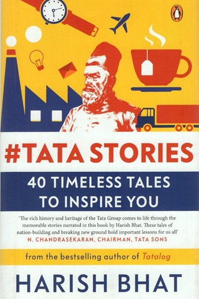

Library › Business & Startups
Tata Stories: 40 Timeless Tales to Inspire You — Summary & Key Lessons

150 years of trust, told in 40 tales.
📖 OPEN THE FULL INTERACTIVE BREAKDOWN →🌐 Read it in Hindi, Hinglish, Gujarati, Tamil & 22 more languages — free, with audio.
💡 The Big Idea
Harish Bhat — a Tata Group veteran — collects forty stories from Tata's 150-year history that reveal the DNA of India's most trusted business house: values over profit, people before numbers, and a relentless commitment to nation-building. From Jamsetji Tata's vision of an Indian steel city to Ratan Tata's care for a stranded employee, from the Nano's ambition to the group's response to the 26/11 attacks, the book is a living case study in how values create durable business success. The lesson threaded through every tale: trust is the slowest asset to build and the fastest to destroy — and the companies that build it win across centuries.
🧠 The 6 Key Lessons
Lesson 1: The Founder's Vision: Jamsetji's 150-Year Gift
Part 1: The Founders
Jamsetji Tata envisioned steel, power and education for India decades before they were built — a steel plant in a region with no steel industry, a university when none existed, hydroelectric power before the grid. Bhat's point: the founder's vision is the company's compass — it outlives the founder and guides every generation. The lesson: build with a time horizon longer than your life. The leader who asks 'what will outlast me?' makes decisions that compound; the one who asks only 'what pays this quarter?' builds nothing that survives. Vision is the asset that never depreciates.
📖 Example: Jamsetji died before the steel plant produced its first ingot — but the vision was so clear that his successors completed it, and the Tata Iron & Steel Company became the foundation of Indian industry. The vision was the inheritance. Read the full example →
⚡ Do this: Write your '150-year gift': the one thing you could start that would still matter in three generations. Start it this year, even small — the vision is the compass.
Lesson 2: People Before Profit: The Stories That Built Trust
Part 2: The Values
Bhat's most repeated theme: Tata's defining decisions consistently chose people over short-term profit — workers paid during strikes, towns built around plants, employees cared for in crisis. Ratan Tata personally intervening for a stranded employee, the group's response to the Taj attacks — each story is a deposit in the trust account. The lesson: every people-over-profit decision is marketing you can't buy and competitors can't copy. The company that treats employees and customers as ends, not means, earns a loyalty that no discount can match. Trust is slow to build and fast to lose — the stories are the compounding.
📖 Example: During the 26/11 Mumbai attacks, the Tata-owned Taj Hotel's staff put guests' safety above their own — behaviour no training manual could produce, only a culture of people-first could. The world saw it; the trust compounded. Read the full example →
⚡ Do this: Make one people-over-profit decision this month — protect an employee, refund a customer, choose the human cost over the spreadsheet. Log it; that's your trust deposit.
Lesson 3: The Nation-Building Premium: Business as Service
Part 3: The Nation
Bhat shows how Tata businesses repeatedly did what was good for India before what was good for the balance sheet — building institutions (IISc, Tata Memorial Hospital, Tata Institute of Social Sciences), industrializing regions, creating national capability. The lesson: business that serves a larger purpose earns a larger license to operate. The company that is seen as a national asset gets support in good times and patience in bad ones. For the individual: work that serves something beyond yourself is not just noble — it is strategic. The premium on purpose compounds in the market's trust.
📖 Example: Tata Memorial Hospital — a world-class cancer institution built and sustained by a business group — is the kind of nation-building that no marketing budget can replicate. The goodwill is the moat. Read the full example →
⚡ Do this: Identify one way your work could serve beyond its commercial purpose — a pro-bono project, a community initiative, a capability India needs. Start it small this quarter.
Lesson 4: The Nano Lesson: Ambition Must Meet Reality
Part 4: The Failures
Bhat is honest about the Nano — the ₹1-lakh car that was supposed to democratize mobility but became a cautionary tale of positioning and execution. The lesson: grand ambition is necessary but insufficient — the product must match the market's real psychology, not just the founder's vision. The Nano's target customer didn't want to be seen as the 'cheapest car' buyer; the promise was too good to be believed; and the execution (plant issues, delays) eroded the trust. The lesson: test your big idea against real customer psychology before scaling. Ambition is the fuel; reality is the road.
📖 Example: The Nano was technically brilliant and commercially misread — people didn't want the cheapest car, they wanted value with dignity. The engineers delivered a feat; the market delivered a verdict. Read the full example →
⚡ Do this: Before your next big launch, interview five real customers about the PSYCHOLOGY of your offer — not just the utility. What would make them proud to use it, not just able to?
Lesson 5: Stewardship Over Ownership: The Trust That Made Tata Different
Part 5: The Structure
Bhat explains the Tata structure — the trusts that own the majority of Tata Sons, so the group's purpose outlives any individual shareholder's greed. The lesson: ownership is a responsibility, not a trophy — and the structure that protects purpose is the structure that lasts. The founder who builds institutions to outlast themselves, who distributes ownership toward mission rather than concentrating it toward ego, creates something that can survive generations. Stewardship — running the business as if it belongs to the future — is the ultimate long-term strategy.
📖 Example: Because Tata's trusts own the group, no one individual can hollow it out for personal gain — the structure literally enforces the values. The stewardship is engineered, not hoped for. Read the full example →
⚡ Do this: Ask of your work: what structure protects its purpose after you? Document one process, transfer one responsibility, or codify one value this quarter.
Lesson 6: The Tata Way: Integrity as the Default, Not the Exception
Part 6: The Legacy
The book's cumulative lesson: Tata's 150 years of trust rest on a thousand boring, unglamorous acts of integrity — the refused bribe, the honest label, the correct tax, the kept promise. Bhat's point: integrity isn't a policy; it is a default — behaviour that runs so deep it isn't a decision anymore. The lesson: your reputation is the sum of your boring moments, not your dramatic ones. The professional who is honest when nobody's watching builds the only reputation that survives being watched. Integrity is not the exception that makes headlines; it is the default that makes trust.
📖 Example: Bhat recounts small acts — a Tata manager refusing a bribe, a brand correcting its own error, a promise kept at a cost — each unremarkable alone, each compounding into the 'Tata = trust' equation that India has held for over a century. Read the full example →
⚡ Do this: Identify one 'small' integrity act you've been skipping because nobody would notice. Do it this week — the unglamorous honesty is the compound interest.
✅ 5-Step Action Plan
- Write your '150-year gift' — start it small this year.
- Make one people-over-profit decision this month and log it.
- Start one nation-serving initiative in your work this quarter.
- Interview five real customers about the psychology of your offer.
- Do one unnoticed integrity act this week.
⚠️ When This Doesn't Work
Lala's 'Tata's 140 years of ethics prove that integrity pays' is the most beloved Indian corporate history ever — and GoMechanic is the warning that integrity is not a default, it is a choice made under pressure: the Indian auto-tech startup faked ₹300 crore of revenue to keep its growth story alive — the exact opposite of Tata's 'safety, ethics and values first' doctrine. The caveat: Tata's record is real and rare — which is precisely why it is worth studying. The graveyard is full of companies that believed they could fake it 'just this once' and then once more. Tata's lesson is not that ethics are easy; it is that they are the only sustainable strategy.
💀 The Graveyard Proves It
🔧 GoMechanic — The $300M 'Unicorn' That Was a Fabricated Dream. Burn: Planned $300M funding collapsed; founders admitted revenue fabrication. Read the full case study →
💬 Best Quotes from Tata Stories: 40 Timeless Tales to Inspire You
- “Trust is the slowest asset to build and the fastest to destroy.”
- “Every people-over-profit decision is marketing you can't buy.”
- “Integrity is not the exception that makes headlines; it is the default that makes trust.”
Interactive version: mark lessons as read, listen in your language, share quote cards.